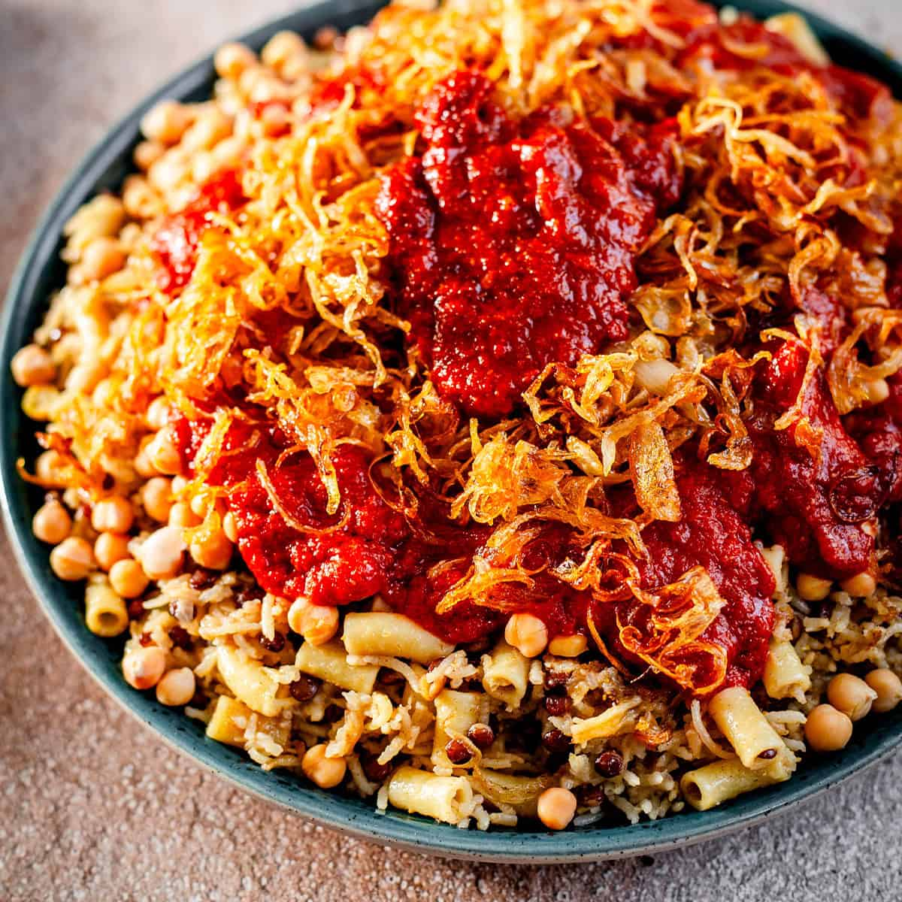
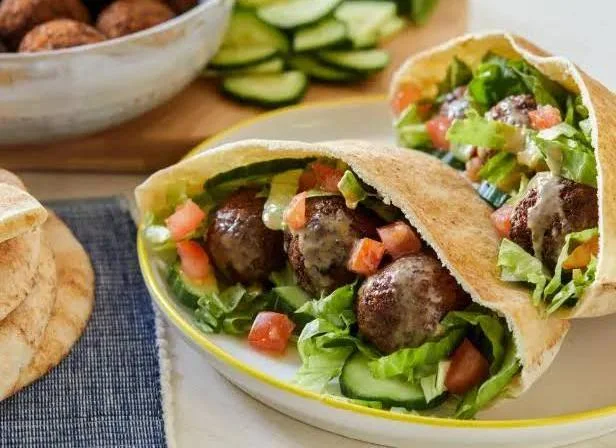
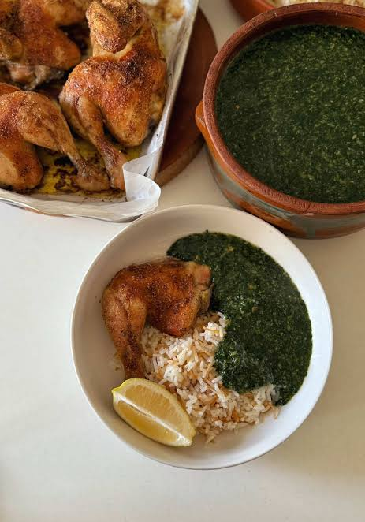
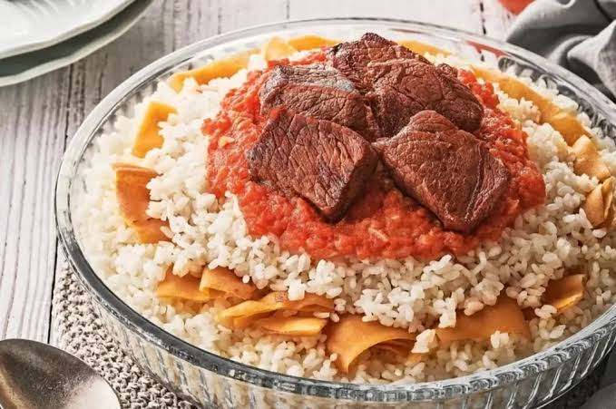

Home
Tourist Places
Famous Cities
Famous Food
Famous Artists
Famous Food
These are the most famous egyptian food dishes
In the Egyptian Books of Genesis, the Ancient Egyptian term "Koshir" meant "Food of the rites of the Gods",Koshir was a breakfast dish that consisted of lentils, wheat, chickpeas, garlic and onions cooked together in clay pots.

Falafel is often served in a flatbread such as pita, samoon, laffa, or taboo; Falafel also frequently refers to a wrapped sandwich that is prepared in this way. The falafel balls may be topped with salads, pickled vegetables, and hot sauce, and drizzled with tahini-based sauces. Falafel balls may also be eaten alone as a snack or served as part of a meze tray.

mulukhiyah is cooked with chicken or at least chicken stock for flavor and is served with white rice, accompanied by lemon or lime. In Tunisia, the dish is prepared with jute powder instead of the leaves and cooked with lamb or beef to be served with bread. In Haiti, a dish prepared from jute leaves is called lalo.

FATTAH:This is a traditional Egyptian food to celebrate any occasion, especially in Eidul Adha when lamb recipes are in full swing like these lamb chops. Fattah is also served at weddings, gatherings, Ramadan and celebrating a new baby.

A classic Eastern Mediterranean and Middle Eastern dish made of grape leaves stuffed with a flavorful rice mixture
Foul Medames is a traditional Egyptian dish made of slow-cooked fava beans, seasoned with olive oil, garlic, lemon juice, and cumin